事件机制
实现事件机制需要以下三个功能模块。
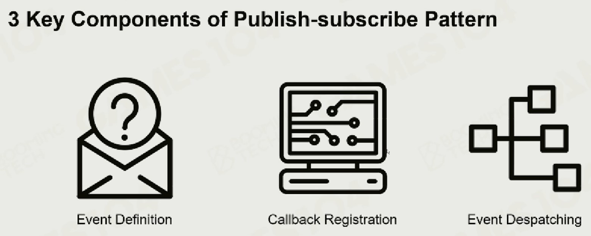
Event Definition
定义事件的类型。
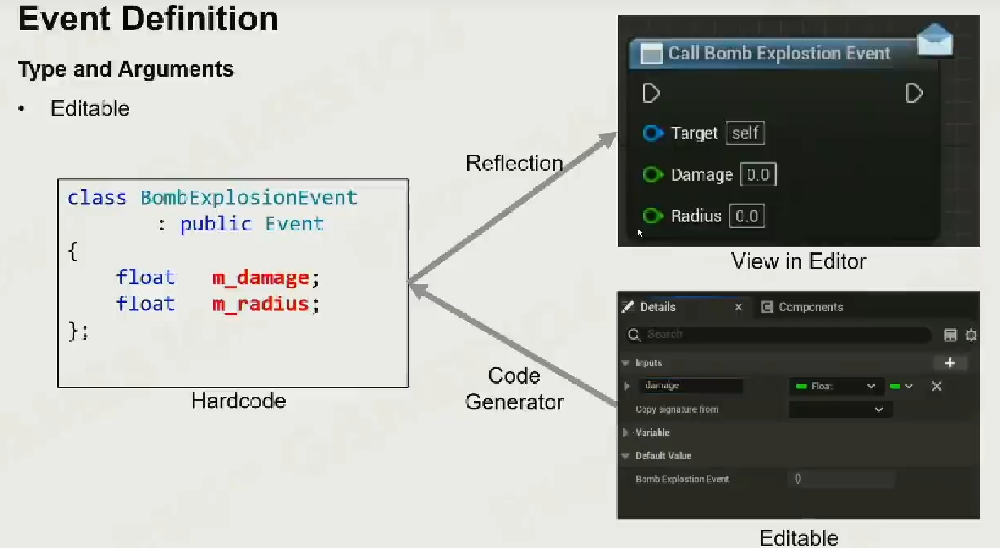
Callback Registration
事件激活回调函数。
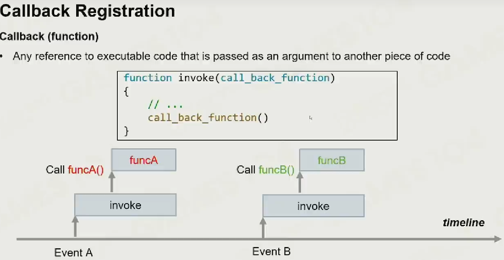
为了防止拥有回调函数的对象被删除导致事件激活了野指针，出现了对象强引用和对象弱引用。
Object Strong Reference
如果对象 A 的生命周期内可以激活对象 B 的回调函数，那么 B 一定要后于 A 被销毁（内存锁定）。
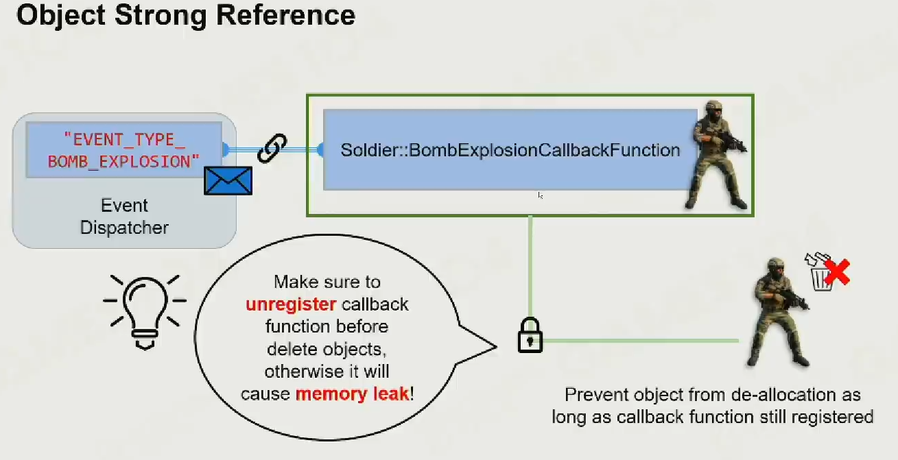
Object Weak Reference
在激活前判断对象是否已被销毁。
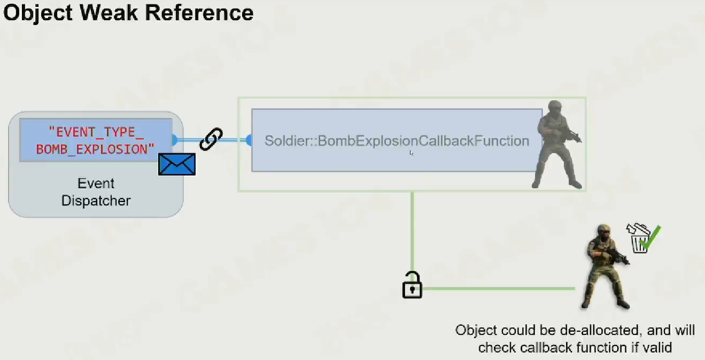
Event Despatching
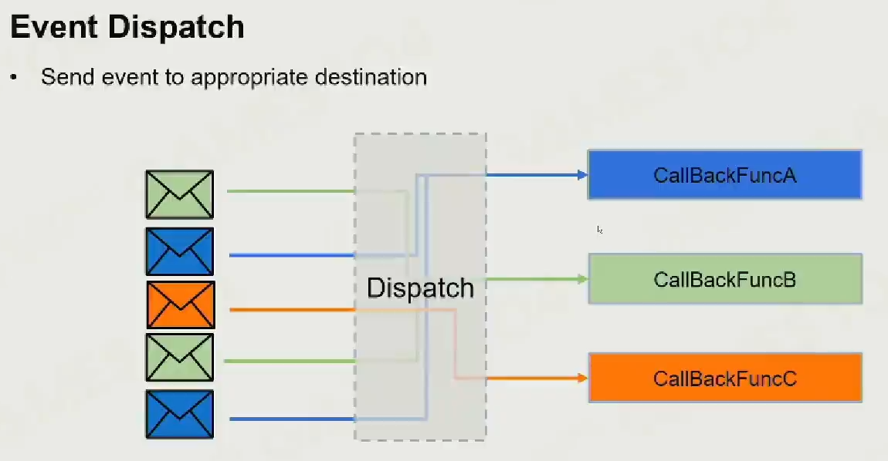
Event Despatching : Immediate
直接派发消息会导致消息等待，同时会人为的造成消息间的关联，导致并发性降低。
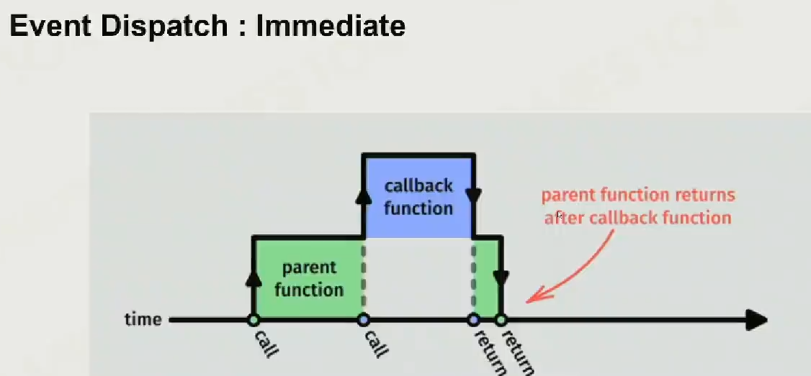
Event Despatching : Queue
将一帧的事件储存起来，在下一帧来临前完成处理。
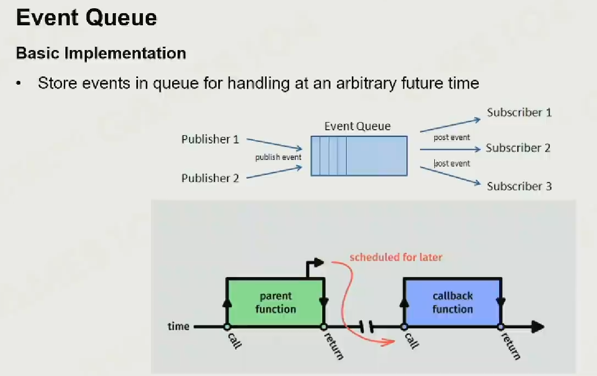
优化
可以通过环形队列控制消息占用的内存空间。
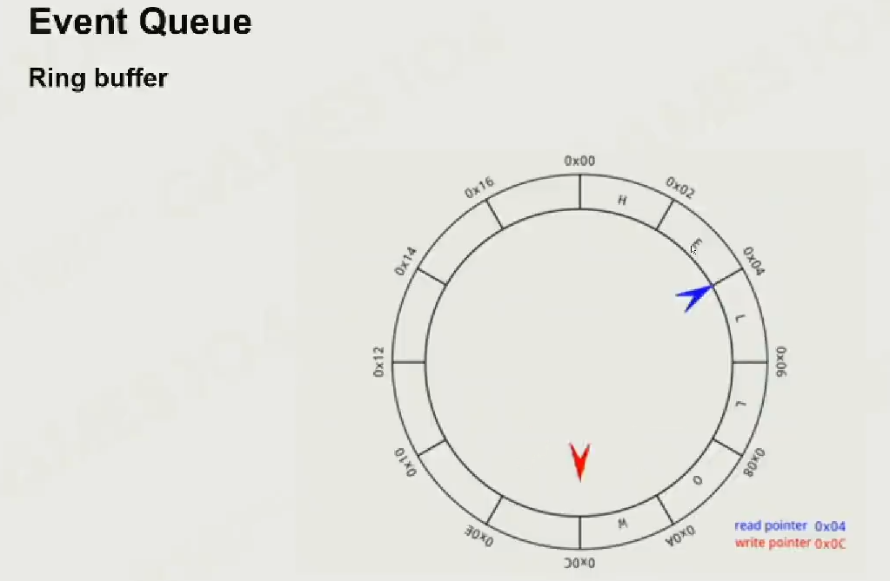
对消息分类处理。
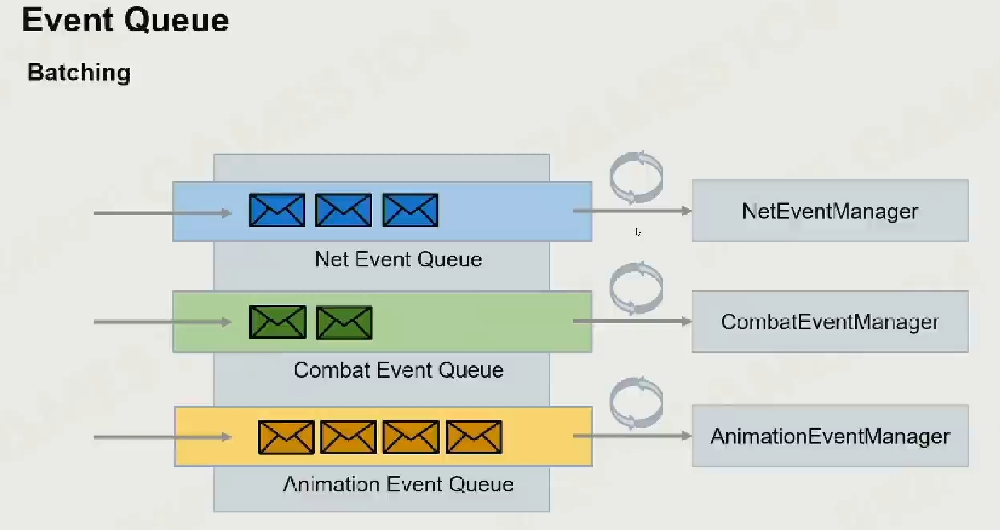
问题
不能保证消息执行顺序。
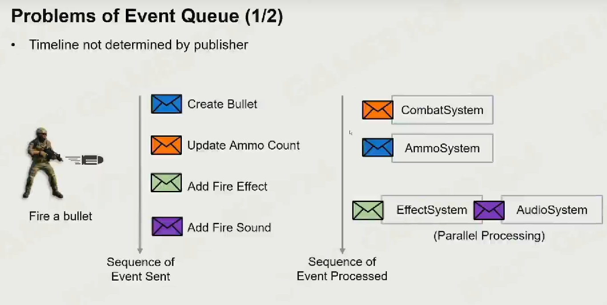
有一帧的延迟。
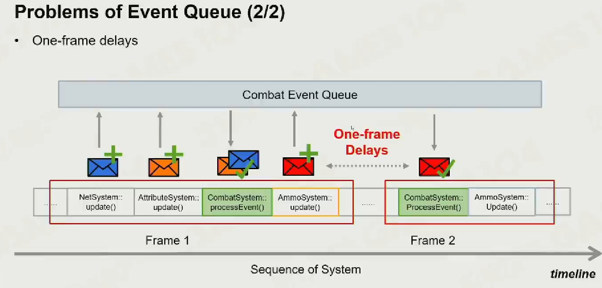
脚本系统
引擎调用脚本
类似于 Unity，通过脚本扩充 Component 功能。
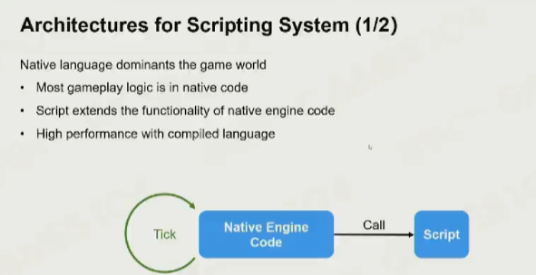
脚本调用引擎
将引擎视为 SDK，暴露接口供脚本调用。
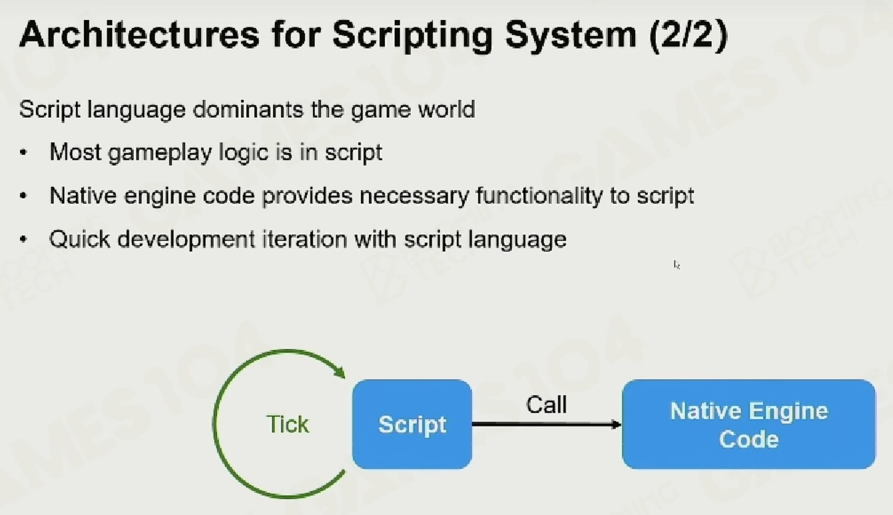
可视化脚本
并不想提太多可视化脚本的事情，涉及到了反射宏（类似于 UE 将代码反射到蓝图中）。
3C
-
Character；
-
Control；
-
Camera。